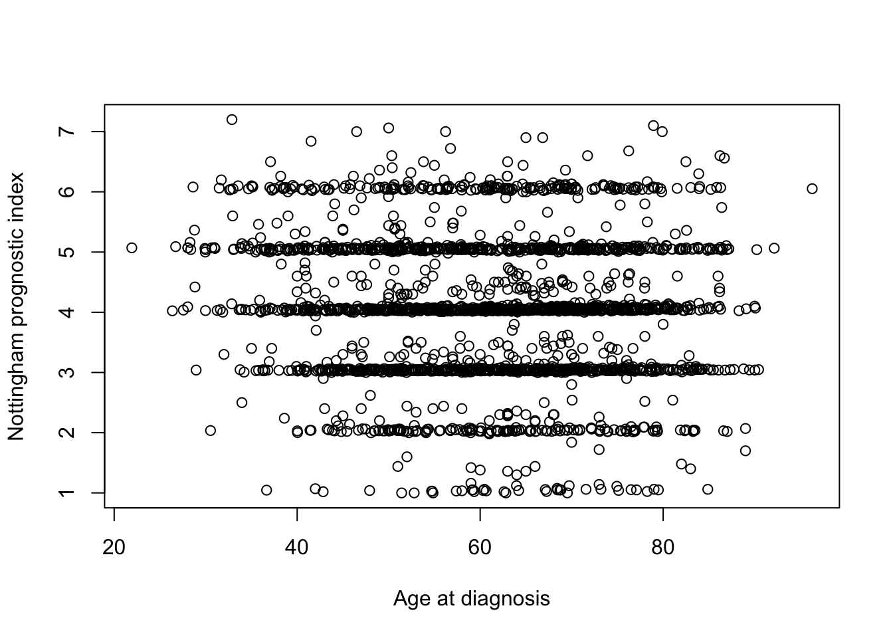

Week 2 – Working with data in R
Learning objectives
- Create and run a script file containing your R code
- Extract values or subsets from vectors
- Modify values within a vector
- Perform vector arithmetic
- Introduce more sophisticated data structures (lists and data frames)
- Learn how to install and use packages that extend R’s basic functionality
- Read data in tabular format into R
- Calculate summary statistics on your tabular data
- Introduce the
tibble, arguably the most important data structure you will use in R- Learn how R deals with missing values
Getting started with data in R
In this course, we’ll be mostly focusing on a set of R packages specifically designed for the most useful and common operations for interacting with and visualizing data, and particularly data in a tabular form. This collection of packages is known as the tidyverse.
Learning the tidyverse is more than just learning about some helpful functions to get certain tasks done. The tidyverse packages form a coherant system for data manipulation, exploration and visualization that share a common design philosophy. There is a certain elegance to code crafted using the tidyverse approach that is in stark contrast to the strange and often cryptic equivalent using traditional ‘base R’. This old-timer only really became a true R convert on being introduced to the tidyverse.
Sadly, as much as we’d like, we can’t just cover the tidyverse alone and ignore the fundamentals of the R language. So this week we will look at some aspects of R that are crucial to understanding how R is handling your data, even though we will come back to some of these concepts in later weeks to show you how those same operations are more easily and elegantly carried out in the tidyverse.
We will also start to look at the most important data structure you’ll use with your data, assuming it is in tabular form, the data frame, and its superior tidyverse derivative, the tibble.
Scripts
Up to now, we were mostly typing code in the Console pane at the > prompt. This is a very interactive way of working with R but what if you want to save the commands you’ve typed for a future session working in R?
Instead we can create a script file containing our R commands that we can come back to later. This is the way most R coding is done so let’s have a go.
From the RStudio ‘File’ menu, select ‘New File’ and then ‘R Script’.

You should now have a new file at the top of the left-hand side of RStudio for your new R script named ‘Untitled1’. The Console window no longer occupies the whole of the left-hand side.

We can type code into this file just as we have done in the Console window at the command prompt.
Type in some of the commands from last week’s assignment. Do you notice that the file name on the tab for this pane is now highlighted in red and has an asterisk?
This tells us that we haven’t yet saved our changes. There are various ways to do so just like in Word or Excel or other applications you’re familiar with, for example using the ‘Save’ option from the ‘File’ menu or clicking on the ‘Save’ button.
My preference by far is to use a keyboard shortcut. On a Mac this would be cmd + S (press the cmd key first and, while keeping this depressed, click the S key); on Windows you would do the same thing using Ctrl + S.
If the file already exists it will be saved without any further ado. As this is a new file, RStudio needs to know what you want to call it and in which folder on your computer you want it to be saved. You can choose the file name and location using the file dialog that appears. RStudio will add a ‘.R’ suffix if you don’t specify one.
It is a good idea to keep your scripts and assignment files for this course together in one folder or directory.
Running scripts
Having typed an R command and hit the return key you’ll notice that the command isn’t actually run like it was in the console window. That’s because you’re writing your R code in an editor. To run a single line of code within your script you can press the ‘Run’ button at the top of the script.

This will run the line of code on which the cursor is flashing or the next line of code if the cursor is on a blank or empty line.
The keyboard shortcut is more convenient in practice as you won’t have to stop typing at the keyboard to use your mouse. This is cmd + return on a Mac and Ctrl + enter on Windows.
Running a line in your script will automatically move the cursor onto the next command which can be very convenient as you’ll be able to run successive commands just by repeatedly clicking ‘Run’ or using the keyboard shortcut.
You can also run the entire script by clicking on the ‘Source’ button, a little to the right of the ‘Run’ button. More useful though is to run ‘Source with Echo’ from the Source drop-down menu as this will also display your commands and the outputs from these in the Console window.
Adding comments to scripts
It is a very good idea to add comments to your code to explain what it’s doing or what you intended. This will help others to understand your code and more than likely even yourself when you come to revisit it a few weeks or months later.
Anything following a # symbol is a comment that R will ignore. Here’s an example of adding comments to our simple script.

Comments usually appear at the beginning of lines but can appear at the end of an R statement.
days <- c(1, 2, 4, 6, 8, 12, 16) # didn't manage to get a measurement on day 10It is also quite common when looking at R code to see lines of code commented out, usually replaced by another line that does something similar or makes a small change.
# random_numbers <- rnorm(100, mean = 0, sd = 1)
random_numbers <- rnorm(100, mean = 0, sd = 0.5)Vectors
In week 1 we introduced vectors, the simplest type of data structure in R. An atomic vector is a collection of values or things of the same type in a given order. We created some last week using c() and the : operator.
some_numbers <- 1:10
days_of_the_week <- c("Sunday", "Monday", "Tuesday", "Wednesday", "Thursday", "Friday", "Saturday")In the first example, an integer vector was created with 10 values from 1 to 10. some_numbers is a name that refers to the vector and can be used in other R statements while 1:10 is the vector object itself.
: operator
The colon operator (:) returns every integer between two integers. These can be in ascending or descending order and can include negative numbers.
countdown <- 10:1
including_some_negative_numbers <- -4:3
A single value is known as a scalar. An example from last week was the number of samples in our experiment.
samples <- 8
samples## [1] 8But as we saw last week, R doesn’t treat this single value any differently; it is still a vector, just one that has a length of 1.
length(days_of_the_week)## [1] 7length(samples)## [1] 1Almost every object in R is a vector of one kind or another, or is constructed of vectors, so it’s really important to understand these well.
length()
The length() function returns the number of elements in a vector.
length(8:15)
Combining vectors
The other way we’ve encountered for creating a vector is to use c(). This is actually a function and we can get help for it just as we can for any other function.
?cFrom the help page you can see that c stands for ‘combine’ (or perhaps ‘concatenate’ as both terms are used in the documentation).
One of the most useful things about the help pages for functions are the examples that are given – you’ll need to scroll down to the bottom of the help page to see them. These can be really helpful in demonstrating how a function works. You can very easily cut and paste these examples and run these in the console window as a way of experimenting with and learning about the function.
Let’s have a look at the first example from the help page for c(). It’s slighly more complicated than what we did last week.
c(1, 7:9)## [1] 1 7 8 9This is actually combining two vectors, the first with a single value 1 and the second with values 7, 8 and 9. Here’s another example:
cats <- c("felix", "kitty", "tigger")
dogs <- c("spot", "snoopy")
cats_and_dogs <- c(cats, dogs)
cats_and_dogs## [1] "felix" "kitty" "tigger" "spot" "snoopy"
c()
The c() function is a generic function that combines its arguments, i.e. the things you pass to the function by including these within the parentheses, (). You can pass as many vectors as you like to c() and it will concatenate these into a single vector.
Arguments will be coerced to a common type.
c(1:5, 10.5, “next”)
Coercion
Atomic vectors must contain values that are all of the same type. A bit later on, we’ll introduce another type of data structure that doesn’t have this restriction – the list. First though, a look at back at one of the exercises from last week’s assignment in which we tried to create vectors of things that are of different types.
integer_logical <- c(1:5, c(TRUE, FALSE, TRUE))
integer_logical## [1] 1 2 3 4 5 1 0 1typeof(integer_logical)## [1] "integer"Combining an integer vector, 1:5, containing the numbers 1 through 5, with a logical vector results in an integer vector. The logical values have been ‘coerced’ into integers. But why the logical values and not the integers to produce a logical vector?
If you think about it, it makes more sense to convert logical values where TRUE and FALSE are usually represented in computers by the bits 1 and 0 respectively. TRUE and FALSE have natural and understandable equivalents in the world of integers. Which logical value would you give to the number 5 for example?
Similarly, integers get converted to doubles in this example:
integer_double <- c(3.4, 7, 2.3, 6:-3)
integer_double## [1] 3.4 7.0 2.3 6.0 5.0 4.0 3.0 2.0 1.0 0.0 -1.0 -2.0 -3.0typeof(integer_double)## [1] "double"Again, this makes more sense than converting doubles (numbers with a decimal point) to integers (whole numbers) and losing some of their precision.
Finally, it is really not obvious how to convert most character strings into either logical or numeric values, so when combining vectors that contain characters everything else gets ‘coerced’ into becoming characters.
we_all_want_to_be_characters <- c(FALSE, 1:5, 23L, 3.23, 5.2e4, 1e-6, "matt")
we_all_want_to_be_characters## [1] "FALSE" "1" "2" "3" "4" "5" "23" "3.23"
## [9] "52000" "1e-06" "matt"typeof(we_all_want_to_be_characters)## [1] "character"Extracting subsets
One of the operations we do frequently on our data is to select subsets that are of particular interest. For example, we may be interested in the top 50 genes in a differential expression analysis for our RNA-seq experiment where those genes of interest are the ones with a log fold change above a certain value and with a p-value below 0.01.
Having a good understanding of how to select a subset of values from a vector is going to be invaluable when we come to do the same for more complicated data structures so let’s take a look.
The main subsetting operator we’ll use is the square bracket, []. Here’s an example.
log2fc <- c(2.3, -1, 0.48, 0.97, -0.02, 1.23)
log2fc[3]## [1] 0.48We have a vector of six log2 fold change values and we’ve chosen to select the third value.
If you’re familiar with other programming languages you will notice that the indexing scheme in R starts from 1, not 0. So the first element in the vector is referred to using the index 1, i.e. log2fc[1].
Multiple values can be extracted by providing a vector of indices, e.g.
log2fc[c(2, 4, 5)]## [1] -1.00 0.97 -0.02You can also extract elements in a different order, e.g.
log2fc[c(2, 5, 4)]## [1] -1.00 -0.02 0.97It is possible to exclude values instead by providing negative indices, e.g. to exclude the second element:
log2fc[-2]## [1] 2.30 0.48 0.97 -0.02 1.23Or to exclude multiple elements:
log2fc[-c(2, 3)]## [1] 2.30 0.97 -0.02 1.23Finally, we can also subset our vector using a vector of logical values.
log2fc[c(TRUE, FALSE, TRUE, TRUE, FALSE, FALSE)]## [1] 2.30 0.48 0.97
Parentheses () and brackets []
Remember to use () for functions and [] for subsetting.
my_vector <- c(1, 7:9)
my_vector[2]
Conditional subsetting
You may be thinking that the last example in which we extracted a subset using logical values seems very abstract and why on earth it could possibly be useful. But actually, it is probably the most frequently used way of selecting values of interest. To understand why, we’ll need to introduce the concept of logical operators.
Let’s say we’re interested in just the log2 fold changes that are above a threshold of 0.5. We can test each of the values using the > logical operator.
log2fc > 0.5## [1] TRUE FALSE FALSE TRUE FALSE TRUEThis results in a logical vector containing TRUE and FALSE values for each element. The values at positions 1, 4 and 6 in our vector are above the threshold so result in TRUE, the others result in FALSE.
We can use this resulting vector to subset our original log2fc vector.
above_threshold <- log2fc > 0.5
log2fc[above_threshold]## [1] 2.30 0.97 1.23In practice, we wouldn’t really create a variable containing our logical vector signifying whether values are of interest. Instead we’d do this in a single step.
log2fc[log2fc > 0.5]## [1] 2.30 0.97 1.23However, in a real R script, we might not want to hard-wire the threshold of 0.5 but instead let the user specify this each time the script is run, e.g. by passing in the value as a command-line argument. If we have a variable storing the desired threshold value, e.g. log2fc_threshold, then we would write the above as follows.
log2fc_threshold <- 0.5
log2fc_above_threshold <- log2fc[log2fc > log2fc_threshold]
log2fc_above_threshold## [1] 2.30 0.97 1.23We also captured the result in another vector called log2fc_above_threshold although we could have overwritten our original log2fc if we wanted to by assigning the result back to log2fc.
log2fc <- log2fc[log2fc > log2fc_threshold]You can combine two or more conditions using & if you want both conditions to be true or using | if either of the conditions holds.
# reset our log2fc vector to how it was originally
log2fc <- c(2.3, -1, 0.48, 0.97, -0.02, 1.23)
# find small fold changes
log2fc[log2fc < 0.5 & log2fc > -0.5]## [1] 0.48 -0.02# find large fold changes
log2fc[log2fc > 1 | log2fc < -1]## [1] 2.30 1.23& and | are the R versions of the AND and OR operations in Boolean algebra but applied to vectors.
Logical operators
The following table lists the logical operators you can use in R.
| Operator | Description |
|---|---|
| < | less than |
| <= | less than or equal to |
| > | greater than |
| >= | greater than or equal to |
| == | exactly equal to |
| != | not equal to |
| !x | NOT x |
| x | y | x OR y |
| x & y | x AND y |
x and y in the last 3 of these operators are intended for logical values; if you apply them to other types, those other types will be coerced to logicals in exactly the same way we saw earlier.
Modifying subsets
All subsetting operations can be combined with assignment. So we can modify or overwrite the values at specified position in our vector.
some_numbers <- 1:10
some_numbers[c(2, 4, 8)] <- c(150, 34, -10)
some_numbers## [1] 1 150 3 34 5 6 7 -10 9 10And, as before, we could use a condition to decide which values to change. For example, you may decide that log2 fold changes above 1 are somewhat unreliable with your detection method and so you’d like to put a cap on any values above this limit.
log2fc[log2fc > 1] <- 1
log2fc## [1] 1.00 -1.00 0.48 0.97 -0.02 1.00Vector arithmetic
Many operations in R are vectorized, which means that the operation is applied to an entire set of values at once. We’ve already seen lots of examples of this, like the following:
some_numbers <- 1:10
square_numbers <- some_numbers ^ 2
square_numbers## [1] 1 4 9 16 25 36 49 64 81 100Here we used the ^ exponent operator to raise our numbers to the power of 2. This happened in a single operation, i.e. just one line of code. In other computer languages we might have had to write what is known as a loop in order to iterate over and perform the calculation for each value in turn.
Another way of writing the above statement to get the same result would be to multiply our numbers by themselves.
square_numbers <- some_numbers * some_numbers
square_numbers## [1] 1 4 9 16 25 36 49 64 81 100What actually happened here was slightly different though. Two vectors (actually the same vector in this case) of the same length were multiplied together. R did this element-by-element, which means that the first element from the first vector was multiplied by the first element of the second vector. Likewise, the second elements from each vector were multiplied by each other and so on.
Here’s another example that we will also show diagrammatically.
a <- 1:6
b <- c(3.2, 0.4, 1.6, 0.5, 1.3, 0.1)
a * b## [1] 3.2 0.8 4.8 2.0 6.5 0.6
Usually vector arithmetic involves two vectors of the same length or involves a vector and a scalar (a vector of length 1). One of the first examples from last week was the second scenario involving a vector and a single value.
1:36 * 2## [1] 2 4 6 8 10 12 14 16 18 20 22 24 26 28 30 32 34 36 38 40 42 44 46
## [24] 48 50 52 54 56 58 60 62 64 66 68 70 72Vector recycling (advanced)
It is possible to perform calculations using two vectors of different sizes. When R runs out of values to use from the shorter of the two vectors, it wraps around to the beginning of that shorter one. For example, we can set every other value in our set of numbers to be negative as follows:
some_numbers * c(1, -1)## [1] 1 -2 3 -4 5 -6 7 -8 9 -10When R gets to the third element it has exhausted the shorter vector, c(1, -1), so it goes back to the beginning, i.e. back to the first value, 1. It uses the second vector five times in what is referred to as vector recycling.
You will probably never have to do something like this (why would you?) but without you knowing it you will carry out vector arithmetic using recycling very frequently. This is because a very common operation is to carry out a calculation on a vector using a single scalar value. For example, multiplying all values by a constant.
heights_in_metres <- c(1.86, 1.65, 1.72, 1.4, 1.79)
heights_in_centimetres <- 100 * heights_in_metres
heights_in_centimetres## [1] 186 165 172 140 179The multiplier of 100 is effectively being recycled and so is equivalent to us having written the following:
heights_in_centimetres <- c(100, 100, 100, 100, 100) * heights_in_metresR will give a warning if we carry out vector arithmetic on two vectors where the length of one of those vectors is not an exact multiple of the length of the other.
1:7 * c(1, -1)## Warning in 1:7 * c(1, -1): longer object length is not a multiple of
## shorter object length## [1] 1 -2 3 -4 5 -6 7Combining data of different types
Vectors are all very well and good but your data are almost certainly more complicated than an ordered set of values all of the same type. You’ve probably been working with Excel spreadsheets that contain some columns that are numerical while others contain names or character strings, e.g. the following table of Star Wars characters.
Note that the first column contains character type data, the second and third columns contain numerical data (of type double) and the remaining columns contain the special type we briefly touched on last week, factors, that look like character types but have a limited set of values or categories.
Lists
R’s simplest structure that combines data of different types is a list. A list is a collection of vectors. It is also a vector itself but is a step up in complexity from the atomic vectors we’ve been looking at up until now. Vectors in a list can be of different types and different lengths.
my_first_list <- list(1:10, c("a", "b", "c"), c(TRUE, FALSE), 100, c(1.3, 2.2, 0.75, 3.8))
my_first_list## [[1]]
## [1] 1 2 3 4 5 6 7 8 9 10
##
## [[2]]
## [1] "a" "b" "c"
##
## [[3]]
## [1] TRUE FALSE
##
## [[4]]
## [1] 100
##
## [[5]]
## [1] 1.30 2.20 0.75 3.80my_first_list has five elements and when printed out like this looks quite strange at first sight. Note how each of the elements of a list is referred to by an index within 2 sets of square brackets. This gives a clue to how you can access individual elements in the list.
my_first_list[[2]]## [1] "a" "b" "c"The line of code in which we created this list is a little difficult to read and might be better written split across several lines.
my_first_list <- list(
1:10,
c("a", "b", "c"),
c(TRUE, FALSE), 100,
c(1.3, 2.2, 0.75, 3.8)
)The editor in RStudio will indent code to help this look clearer. The R interpretor is fully able to cope with code split across multiple lines; it will assume this is what you’re doing if it doesn’t think the current line of code is complete.
Elements in lists are normally named, e.g.
genomics_instruments <- list(
sequencers = c("NovaSeq 6000", "HiSeq 4000", "NextSeq 500", "MiSeq"),
liquid_handling_robots = c("Mosquito HV", "Bravo")
)
genomics_instruments## $sequencers
## [1] "NovaSeq 6000" "HiSeq 4000" "NextSeq 500" "MiSeq"
##
## $liquid_handling_robots
## [1] "Mosquito HV" "Bravo"We can still access the elements using the double square brackets but now we can use either the index (position) or the name.
genomics_instruments[[1]]## [1] "NovaSeq 6000" "HiSeq 4000" "NextSeq 500" "MiSeq"genomics_instruments[["sequencers"]]## [1] "NovaSeq 6000" "HiSeq 4000" "NextSeq 500" "MiSeq"Even more conveniently we can use the $ operator.
genomics_instruments$sequencers## [1] "NovaSeq 6000" "HiSeq 4000" "NextSeq 500" "MiSeq"You can see what the names of elements in your list are using the names() function.
names(genomics_instruments)## [1] "sequencers" "liquid_handling_robots"Modifying lists
You can modify lists either by adding addition elements or modifying existing ones.
genomics_instruments$dna_rna_quality_control <- c("Bioanalyzer 2100", "Tapestation 4200")
genomics_instruments## $sequencers
## [1] "NovaSeq 6000" "HiSeq 4000" "NextSeq 500" "MiSeq"
##
## $liquid_handling_robots
## [1] "Mosquito HV" "Bravo"
##
## $dna_rna_quality_control
## [1] "Bioanalyzer 2100" "Tapestation 4200"genomics_instruments$sequencers[3] <- "NextSeq 550 (upgraded)"
genomics_instruments## $sequencers
## [1] "NovaSeq 6000" "HiSeq 4000"
## [3] "NextSeq 550 (upgraded)" "MiSeq"
##
## $liquid_handling_robots
## [1] "Mosquito HV" "Bravo"
##
## $dna_rna_quality_control
## [1] "Bioanalyzer 2100" "Tapestation 4200"Statistical test results
Lists can be thought of as a ragbag collection of things without a very clear structure. You probably won’t find yourself creating list objects of the kind we’ve seen above when analysing your own data. However, the list provides the basic underlying structure to the data frame that we’ll be using throughout the rest of this course.
The other area where you’ll come across lists is as the return value for many of the statistical tests and procedures such as linear regression that you can carry out in R.
To demonstrate, we’ll run a t-test comparing two sets of samples drawn from subtly different normal distributions. We’ve already come across the rnorm() function for creating random numbers based on a normal distribution.
sample1 <- rnorm(n = 50, mean = 1.0, sd = 0.1)
sample2 <- rnorm(n = 50, mean = 1.1, sd = 0.1)
t.test(sample1, sample2)##
## Welch Two Sample t-test
##
## data: sample1 and sample2
## t = -5.3825, df = 95.637, p-value = 5.227e-07
## alternative hypothesis: true difference in means is not equal to 0
## 95 percent confidence interval:
## -0.15328804 -0.07068604
## sample estimates:
## mean of x mean of y
## 0.995505 1.107492The output from running the t.test() function doesn’t much look like a list. That’s because it is a special type of list with some additional behaviours including knowing how to print itself in a human-friendly way. But we can check it is a list and use some of the list operations we’ve just looked at.
result <- t.test(sample1, sample2)
is.list(result)## [1] TRUEnames(result)## [1] "statistic" "parameter" "p.value" "conf.int" "estimate"
## [6] "null.value" "stderr" "alternative" "method" "data.name"result$p.value## [1] 5.227177e-07Data frames
A much more useful data structure and the one we will mostly be using for the rest of the course is the data frame. This is actually a special type of list in which all the elements are vectors of the same length. The data frame is how R represents tabular data like the Star Wars table.
There are a number of example data frames lurking in the background just waiting for you to call on them. Many of the examples for functions given in the help pages make use of these. Two such data frames that are often used in example code snippets are iris and mtcars. See, for example, the help page for the unique() function in which iris appears in the last code example without any explanation of what the mysterious iris is and potentially causing some confusion to the uninitiated.
To bring one of these internal data sets to the fore, you can just start using it by name.
iris## Sepal.Length Sepal.Width Petal.Length Petal.Width Species
## 1 5.1 3.5 1.4 0.2 setosa
## 2 4.9 3.0 1.4 0.2 setosa
## 3 4.7 3.2 1.3 0.2 setosa
## 4 4.6 3.1 1.5 0.2 setosa
## 5 5.0 3.6 1.4 0.2 setosa
## 6 5.4 3.9 1.7 0.4 setosaHere we’ve only displayed the first few rows. If you type iris into the console pane you’ll notice that it prints the entire table with row numbers that indicate that the data frame contains measurements for 150 irises.
You can also get help for a data set such as iris in the usual way.
?irisThis reveals that iris is a rather famous old data set of measurements taken by the esteemed British statistician and geneticist, Ronald Fisher (he of Fisher’s exact test fame).
Creating a data frame
A data frame can be created in a similar way to how we created a list. The only restriction is that each of the vectors should be named and all must have the same length.
beatles <- data.frame(
name = c("John", "Paul", "Ringo", "George"),
birth_year = c(1940, 1942, 1940, 1943),
instrument = c("guitar", "bass", "drums", "guitar")
)
beatles## name birth_year instrument
## 1 John 1940 guitar
## 2 Paul 1942 bass
## 3 Ringo 1940 drums
## 4 George 1943 guitarExtracting values from a data frame
A data frame is a special type of list so you can access its elements in the same way as we saw previously for lists.
names(iris)## [1] "Sepal.Length" "Sepal.Width" "Petal.Length" "Petal.Width"
## [5] "Species"iris$Petal.Width # or equivalently iris[["Petal.Width"]] or iris[[4]]## [1] 0.2 0.2 0.2 0.2 0.2 0.4 0.3 0.2 0.2 0.1 0.2 0.2 0.1 0.1 0.2 0.4 0.4
## [18] 0.3 0.3 0.3 0.2 0.4 0.2 0.5 0.2 0.2 0.4 0.2 0.2 0.2 0.2 0.4 0.1 0.2
## [35] 0.2 0.2 0.2 0.1 0.2 0.2 0.3 0.3 0.2 0.6 0.4 0.3 0.2 0.2 0.2 0.2 1.4
## [52] 1.5 1.5 1.3 1.5 1.3 1.6 1.0 1.3 1.4 1.0 1.5 1.0 1.4 1.3 1.4 1.5 1.0
## [69] 1.5 1.1 1.8 1.3 1.5 1.2 1.3 1.4 1.4 1.7 1.5 1.0 1.1 1.0 1.2 1.6 1.5
## [86] 1.6 1.5 1.3 1.3 1.3 1.2 1.4 1.2 1.0 1.3 1.2 1.3 1.3 1.1 1.3 2.5 1.9
## [103] 2.1 1.8 2.2 2.1 1.7 1.8 1.8 2.5 2.0 1.9 2.1 2.0 2.4 2.3 1.8 2.2 2.3
## [120] 1.5 2.3 2.0 2.0 1.8 2.1 1.8 1.8 1.8 2.1 1.6 1.9 2.0 2.2 1.5 1.4 2.3
## [137] 2.4 1.8 1.8 2.1 2.4 2.3 1.9 2.3 2.5 2.3 1.9 2.0 2.3 1.8
$ operator
Use $ to extract an element from a list or a column from a data frame by name.
iris$Species
In that last example we extracted the Petal.Width column which itself is a vector. We can further subset the values in that column to, say, return the first 10 values only.
iris$Petal.Length[1:10]## [1] 1.4 1.4 1.3 1.5 1.4 1.7 1.4 1.5 1.4 1.5We can also select a subset of columns as follows:
iris[c("Petal.Width", "Petal.Length", "Species")] # or equivalently iris[c(4, 3, 5)]## Petal.Width Petal.Length Species
## 1 0.2 1.4 setosa
## 2 0.2 1.4 setosa
## 3 0.2 1.3 setosa
## 4 0.2 1.5 setosa
## 5 0.2 1.4 setosa
## 6 0.4 1.7 setosaData frames have rows and columns both of which have names that can be used to extract subsets of our tabular data. You can get those names using rownames() and colnames().
colnames(iris) # this is essentially the same as names()## [1] "Sepal.Length" "Sepal.Width" "Petal.Length" "Petal.Width"
## [5] "Species"rownames(iris)## [1] "1" "2" "3" "4" "5" "6" "7" "8" "9" "10" "11"
## [12] "12" "13" "14" "15" "16" "17" "18" "19" "20" "21" "22"
## [23] "23" "24" "25" "26" "27" "28" "29" "30" "31" "32" "33"
## [34] "34" "35" "36" "37" "38" "39" "40" "41" "42" "43" "44"
## [45] "45" "46" "47" "48" "49" "50" "51" "52" "53" "54" "55"
## [56] "56" "57" "58" "59" "60" "61" "62" "63" "64" "65" "66"
## [67] "67" "68" "69" "70" "71" "72" "73" "74" "75" "76" "77"
## [78] "78" "79" "80" "81" "82" "83" "84" "85" "86" "87" "88"
## [89] "89" "90" "91" "92" "93" "94" "95" "96" "97" "98" "99"
## [100] "100" "101" "102" "103" "104" "105" "106" "107" "108" "109" "110"
## [111] "111" "112" "113" "114" "115" "116" "117" "118" "119" "120" "121"
## [122] "122" "123" "124" "125" "126" "127" "128" "129" "130" "131" "132"
## [133] "133" "134" "135" "136" "137" "138" "139" "140" "141" "142" "143"
## [144] "144" "145" "146" "147" "148" "149" "150"In this case the row names are just numbers but did you notice that these row numbers are all displayed in quotation marks? They are in fact character strings.
typeof(rownames(iris))## [1] "character"If we take a look at the mtcars data frame we can see that the row names are models of cars.
rownames(mtcars)## [1] "Mazda RX4" "Mazda RX4 Wag" "Datsun 710"
## [4] "Hornet 4 Drive" "Hornet Sportabout" "Valiant"
## [7] "Duster 360" "Merc 240D" "Merc 230"
## [10] "Merc 280" "Merc 280C" "Merc 450SE"
## [13] "Merc 450SL" "Merc 450SLC" "Cadillac Fleetwood"
## [16] "Lincoln Continental" "Chrysler Imperial" "Fiat 128"
## [19] "Honda Civic" "Toyota Corolla" "Toyota Corona"
## [22] "Dodge Challenger" "AMC Javelin" "Camaro Z28"
## [25] "Pontiac Firebird" "Fiat X1-9" "Porsche 914-2"
## [28] "Lotus Europa" "Ford Pantera L" "Ferrari Dino"
## [31] "Maserati Bora" "Volvo 142E"We could look up the row for a particular car using the square bracket notation but in a slightly different and odd-looking way.
mtcars["Ferrari Dino", ]## mpg cyl disp hp drat wt qsec vs am gear carb
## Ferrari Dino 19.7 6 145 175 3.62 2.77 15.5 0 1 5 6The , is somehow telling R to subset based on rows, not columns. If you omit the comma, R will think you’re referring to columns and will complain because it can’t find a column named “Ferrari Dino” (give it go and see for yourself).
Similarly we can extract multiple rows by providing a vector of car names:
mtcars[c("Ferrari Dino", "Maserati Bora"), ]## mpg cyl disp hp drat wt qsec vs am gear carb
## Ferrari Dino 19.7 6 145 175 3.62 2.77 15.5 0 1 5 6
## Maserati Bora 15.0 8 301 335 3.54 3.57 14.6 0 1 5 8This way of accessing the data frame makes more sense when we look at how we can access subsets of rows and columns at the same time, for example selecting the first three rows and the first five columns.
mtcars[1:3, 1:5] # equivalent to mtcars[c("Mazda RX4", "Mazda RX4 Wag", "Datsun 710"), c("mpg", "cyl", "disp", "hp", "drat")]## mpg cyl disp hp drat
## Mazda RX4 21.0 6 160 110 3.90
## Mazda RX4 Wag 21.0 6 160 110 3.90
## Datsun 710 22.8 4 108 93 3.85We can extract just a single element in our table.
mtcars[4, 3]## [1] 258We can also use conditional subsetting to extract the rows that meet certain conditions, e.g. all the cars with automatic transmission (those with am value of 0).
mtcars[mtcars$am == 0, ]## mpg cyl disp hp drat wt qsec vs am gear carb
## Hornet 4 Drive 21.4 6 258.0 110 3.08 3.215 19.44 1 0 3 1
## Hornet Sportabout 18.7 8 360.0 175 3.15 3.440 17.02 0 0 3 2
## Valiant 18.1 6 225.0 105 2.76 3.460 20.22 1 0 3 1
## Duster 360 14.3 8 360.0 245 3.21 3.570 15.84 0 0 3 4
## Merc 240D 24.4 4 146.7 62 3.69 3.190 20.00 1 0 4 2
## Merc 230 22.8 4 140.8 95 3.92 3.150 22.90 1 0 4 2
## Merc 280 19.2 6 167.6 123 3.92 3.440 18.30 1 0 4 4
## Merc 280C 17.8 6 167.6 123 3.92 3.440 18.90 1 0 4 4
## Merc 450SE 16.4 8 275.8 180 3.07 4.070 17.40 0 0 3 3
## Merc 450SL 17.3 8 275.8 180 3.07 3.730 17.60 0 0 3 3
## Merc 450SLC 15.2 8 275.8 180 3.07 3.780 18.00 0 0 3 3
## Cadillac Fleetwood 10.4 8 472.0 205 2.93 5.250 17.98 0 0 3 4
## Lincoln Continental 10.4 8 460.0 215 3.00 5.424 17.82 0 0 3 4
## Chrysler Imperial 14.7 8 440.0 230 3.23 5.345 17.42 0 0 3 4
## Toyota Corona 21.5 4 120.1 97 3.70 2.465 20.01 1 0 3 1
## Dodge Challenger 15.5 8 318.0 150 2.76 3.520 16.87 0 0 3 2
## AMC Javelin 15.2 8 304.0 150 3.15 3.435 17.30 0 0 3 2
## Camaro Z28 13.3 8 350.0 245 3.73 3.840 15.41 0 0 3 4
## Pontiac Firebird 19.2 8 400.0 175 3.08 3.845 17.05 0 0 3 2Here we have used the equality operator, ==, which is not to be mistaken for the assignment operator, =, used to specify arguments to functions. mtcars$am ==0 returns a logical vector with TRUE values for each car that has automatic transmission (am equal to 0). We then use this to subset rows (note the comma after the logical condition).
Other useful functions for data frames are dim(), nrow() and ncol() that let you know about the dimensions of your table.
dim(mtcars)## [1] 32 11nrow(mtcars)## [1] 32ncol(mtcars)## [1] 11Subsetting data frames
Get the first element in the first column.
iris[1, 1]
Get the first element from the fifth column.
iris[1, 5]
Get the fourth column as a vector.
iris[, 4]
Get the fourth column as a data frame.
iris[4]
Get the first 10 elements from the fourth column.
iris[1:10, 4]
Get the third row as a data frame.
iris[3, ]
Get the first 6 rows (equivalent to head(iris)).
iris[1:6, ]
Get a column by name as a vector.
iris$Petal.Length
Get several columns by name as a data frame.
iris[c(“Petal.Length”, “Petal.Width”, “Species”)]
Get specific rows and columns.
mtcars[c(“Ferrari Dino”, “Maserati Bora”), c(“mpg”, “cyl”, “hp”)]
Some functions work just as well (or even better) with data frames as they do with vectors. Remember the summary() function from last week? Let’s give that a go on the iris data frame.
summary(iris)## Sepal.Length Sepal.Width Petal.Length Petal.Width
## Min. :4.300 Min. :2.000 Min. :1.000 Min. :0.100
## 1st Qu.:5.100 1st Qu.:2.800 1st Qu.:1.600 1st Qu.:0.300
## Median :5.800 Median :3.000 Median :4.350 Median :1.300
## Mean :5.843 Mean :3.057 Mean :3.758 Mean :1.199
## 3rd Qu.:6.400 3rd Qu.:3.300 3rd Qu.:5.100 3rd Qu.:1.800
## Max. :7.900 Max. :4.400 Max. :6.900 Max. :2.500
## Species
## setosa :50
## versicolor:50
## virginica :50
##
##
## Wow, that’s amazing! One simple command to compute all those useful summary statistics for our entire data set.
The summary for numerical columns contains the minimum and maximum values, the median and mean, and the interquartile range. The Species column contains categorical data (stored as a special factor type in R) and summary() shows how many observations there are for each type of iris.
Modifying data frames
We can use the subsetting operations for assigning values in order to modify or update a data frame in a very similar way to what we saw earlier for vectors.
We can change a single value, such as the number of cylinders of the Ferrari Dino.
mtcars["Ferrari Dino", "cyl"] <- 8
mtcars["Ferrari Dino", ]## mpg cyl disp hp drat wt qsec vs am gear carb
## Ferrari Dino 19.7 8 145 175 3.62 2.77 15.5 0 1 5 6We can change multiple values, for example:
mtcars[c(1, 4, 5), "gear"] <- c(6, 5, 5)
head(mtcars)## mpg cyl disp hp drat wt qsec vs am gear carb
## Mazda RX4 21.0 6 160 110 3.90 2.620 16.46 0 1 6 4
## Mazda RX4 Wag 21.0 6 160 110 3.90 2.875 17.02 0 1 4 4
## Datsun 710 22.8 4 108 93 3.85 2.320 18.61 1 1 4 1
## Hornet 4 Drive 21.4 6 258 110 3.08 3.215 19.44 1 0 5 1
## Hornet Sportabout 18.7 8 360 175 3.15 3.440 17.02 0 0 5 2
## Valiant 18.1 6 225 105 2.76 3.460 20.22 1 0 3 1We could set these multiple values to a single value.
mtcars[c(1, 4, 5), "gear"] <- 6
head(mtcars)## mpg cyl disp hp drat wt qsec vs am gear carb
## Mazda RX4 21.0 6 160 110 3.90 2.620 16.46 0 1 6 4
## Mazda RX4 Wag 21.0 6 160 110 3.90 2.875 17.02 0 1 4 4
## Datsun 710 22.8 4 108 93 3.85 2.320 18.61 1 1 4 1
## Hornet 4 Drive 21.4 6 258 110 3.08 3.215 19.44 1 0 6 1
## Hornet Sportabout 18.7 8 360 175 3.15 3.440 17.02 0 0 6 2
## Valiant 18.1 6 225 105 2.76 3.460 20.22 1 0 3 1We can also create new columns, just like we did to create new elements in a list, although with the additional constraint that the new column must have the same length as all the other columns.
In the following, we add a column for kilometres per litre by mutliplying the miles per gallon column (mpg) by the appropriate scaling factor.
mtcars$kpl <- mtcars$mpg * 0.425144
mtcars[1:6, c("cyl", "mpg", "kpl")]## cyl mpg kpl
## Mazda RX4 6 21.0 8.928024
## Mazda RX4 Wag 6 21.0 8.928024
## Datsun 710 4 22.8 9.693283
## Hornet 4 Drive 6 21.4 9.098082
## Hornet Sportabout 8 18.7 7.950193
## Valiant 6 18.1 7.695106Viewing data frames
One last aside before moving on to the more user-friendly tidyverse version of the data frame, the tibble. Earlier we truncated the data frame when printing it out because it was really a bit too long to digest in one go. Although we hid this from view, we used the head() function.
head(iris)## Sepal.Length Sepal.Width Petal.Length Petal.Width Species
## 1 5.1 3.5 1.4 0.2 setosa
## 2 4.9 3.0 1.4 0.2 setosa
## 3 4.7 3.2 1.3 0.2 setosa
## 4 4.6 3.1 1.5 0.2 setosa
## 5 5.0 3.6 1.4 0.2 setosa
## 6 5.4 3.9 1.7 0.4 setosaYou can specify how many rows to return from the ‘head’ (top) of the data frame – have a look at the help page to see how. Also, the help page lets you know about the equivalent function, tail(), for returning the last few rows.
Another way of inspecting the contents of a data frame in RStudio is to bring up a spreadsheet-style data viewer using the View() function.
View(iris)This will open a new tab pane in the top left-hand part of RStudio alongside any script or markdown files you have open.
This viewer has some handy filtering capabilities - try using the search box, e.g. by entering the search term ‘versi’, and see what happens.
All the data objects you’ve created are listed in the Environment tab pane (top right-hand side in RStudio) – double-clicking on an object in this pane will also open it in the viewer.
Data semantics
From “Tidy Data” by Hadley Wickham, The Journal of Statistical Software, vol. 59, 2014.
A data set is a collection of values, usually either numbers (if quantitative) or character strings (if qualitative). Values are organised in two ways. Every value belongs to a variable and an observation.
A variable contains all values that measure the same underlying attribute (like height, temperature, duration) across units.
An observation contains all values measured on the same unit (like a person, or a day, or a race) across attributes.
The data frame represents observations as rows and variables or attributes as columns.
The iris data set has 150 observations (i.e. 150 rows), one for each iris plant from which measurements were recorded. The variables are the petal width and length, sepal width and length and species, each of which is an underlying attribute of an iris plant. An observation is the set of measurements or attributes recorded for a single iris plant.
Packages
Before we move on to the tidyverse version of a data frame, the tibble, we have to load the tidyverse package that provides the tibble functionality. It doesn’t come with the set of packages loaded when you first start R.
There are thousands of R packages that extend R’s core functionality to provide specialized functions for doing all kinds of things. There are R packages that provide various kinds of visualizations and plotting functions, others that let us manipulate data in interesting and useful ways, and still others that give us access to cutting-edge machine learning algorithms. Several packages have been developed by statisticians and bioinformaticians at CRUK CI, mainly focusing on genomic and transcriptomic analysis methods.
You need to load a package using the library() function in order to be able to use the functions and data sets that the package provides. The tibble data structure is part of the tibble package so to make this available you would run the following command:
library(tibble)The tibble package also contains various useful functions for converting other data structures, e.g. data frames, to tibbles and for working with tibble objects.
The tibble package is one of a collection of packages that make up the tidyverse. It is usually more convenient to load the core tidyverse packages in one go as follows.
library(tidyverse)## ── Attaching packages ─────────────────────── tidyverse 1.3.0 ──## ✔ ggplot2 3.2.1 ✔ purrr 0.3.3
## ✔ tibble 2.1.3 ✔ dplyr 0.8.3
## ✔ tidyr 1.0.0 ✔ stringr 1.4.0
## ✔ readr 1.3.1 ✔ forcats 0.4.0## ── Conflicts ────────────────────────── tidyverse_conflicts() ──
## ✖ dplyr::filter() masks stats::filter()
## ✖ dplyr::lag() masks stats::lag()The output from this command tells us which packages were loaded, one of which is the tibble package. Another of these is ggplot2 that provides excellent plotting functions for visualizing our data and will be the main focus next week.
We also got a warning about some conflicts. This tells us that there are functions loaded as part of the dplyr package that have the same name as functions that are in the stats package. The stats package was already loaded, from when we first started our R session, and the functions referred to in the warning are now masked; to use these instead of their dplyr namesakes you need to specify them fully by adding the package name and :: as shown in the warning message.
Installing packages
If you got the following error message when trying to load the tidyverse, then you haven’t yet installed it.
> library(tidyverse)
Error in library(tidyverse) : there is no package called ‘tidyverse’Installing packages should be relatively straightforward using the install.packages() function.
install.packages("tidyverse")If you’re using R at a regular console within a terminal window, i.e. not RStudio, you may be asked to select one of several mirrors of the CRAN R package repository hosted at different locations around the world (in the UK these are in Bristol and London).
For some packages you may be asked to choose between a binary and a source package, particularly if the latest version of the package is only available in source form and that package contains code written in another language such as C. This could be a problem if you don’t have a C compiler installed on your computer.
Tibbles
The tidyverse brings us a special type of data frame called the tibble.
Data frames have some rather quirky and annoying behaviours and the tibble addresses some of these issues to make life a little easier. We’ll first look at how we can create a tibble and then will have a quick look at some of the advantages of the tibble over the data frame.
Creating a tibble
Tibbles can be created using the tibble() function in a similar manner to how we created a data frame earlier.
beatles <- tibble(
name = c("John", "Paul", "Ringo", "George"),
birth_year = c(1940, 1942, 1940, 1943),
instrument = c("guitar", "bass", "drums", "guitar")
)
beatles## # A tibble: 4 x 3
## name birth_year instrument
## <chr> <dbl> <chr>
## 1 John 1940 guitar
## 2 Paul 1942 bass
## 3 Ringo 1940 drums
## 4 George 1943 guitarA data frame can be converted into a tibble using the as_tibble() function.
iris_tibble <- as_tibble(iris)Our iris tibble is still a data frame but it also has acquired some additional types or classes (tbl_df and tbl).
class(iris)## [1] "data.frame"class(iris_tibble)## [1] "tbl_df" "tbl" "data.frame"Because tibbles are data frames, almost everything we learned about data frames, including subsetting, also applies to tibbles.
Tibbles vs data frames
So let’s now have a look at what capabilities and behaviours these additional types confer and what the main differences are between tibbles and data frames.
Printing
If you typed iris at the command prompt to list its contents it will have printed all 150 lines. At times this can feel a bit unwieldy, as we may just want a quick look at the first few rows to get an idea of what our data frame looks like. Hence the need for the head() function.
Tibbles print in a much more user-friendly way. Only the first 10 rows are displayed and only as many columns as can fit comfortably on the screen. This is best demonstrated with a table with many columns such as the starwars table we came across earlier. starwars is in fact one of those hidden data sets but it is part of the dplyr package so can only be accessed if you load dplyr using library(dplyr) or as part of loading the tidyverse collection of packages using library(tidyverse).
starwars## # A tibble: 87 x 13
## name height mass hair_color skin_color eye_color birth_year gender
## <chr> <int> <dbl> <chr> <chr> <chr> <dbl> <chr>
## 1 Luke… 172 77 blond fair blue 19 male
## 2 C-3PO 167 75 <NA> gold yellow 112 <NA>
## 3 R2-D2 96 32 <NA> white, bl… red 33 <NA>
## 4 Dart… 202 136 none white yellow 41.9 male
## 5 Leia… 150 49 brown light brown 19 female
## 6 Owen… 178 120 brown, gr… light blue 52 male
## 7 Beru… 165 75 brown light blue 47 female
## 8 R5-D4 97 32 <NA> white, red red NA <NA>
## 9 Bigg… 183 84 black light brown 24 male
## 10 Obi-… 182 77 auburn, w… fair blue-gray 57 male
## # … with 77 more rows, and 5 more variables: homeworld <chr>,
## # species <chr>, films <list>, vehicles <list>, starships <list>The dimensions of the tibble are shown on the first line of output and the types of each of the columns (variables) are also displayed in shorthand form. So we easily see that the name column is a character vector and the height column contains integer values, while the mass column contains doubles.
Values in some columns have been shortened with ... in order to fit as many columns on the screen as possible. Those columns that it couldn’t fit on are listed after the first 10 rows.
Not trying to be too clever
The other main thing that tibbles do is to curb some strange behaviours that the developers of R thought were a good idea at the time but which can cause some confusion.
Let’s reconsider how we created the beatles data frame.
beatles <- data.frame(
name = c("John", "Paul", "Ringo", "George"),
birth_year = c(1940, 1942, 1940, 1943),
instrument = c("guitar", "bass", "drums", "guitar")
)What type do you think the name and instrument columns are?
If you think these should be characters, think again. Or inspect these using str() or class().
str(beatles)## 'data.frame': 4 obs. of 3 variables:
## $ name : Factor w/ 4 levels "George","John",..: 2 3 4 1
## $ birth_year: num 1940 1942 1940 1943
## $ instrument: Factor w/ 3 levels "bass","drums",..: 3 1 2 3class(beatles$name)## [1] "factor"The data.frame() function automatically converts character vectors into factors. Factors are categorical variables, i.e. have a restricted set of values, a controlled vocabulary if you like.
Why did it do this? I never asked it to. Those vectors started as character vectors, why does data.frame() think I want these to be factors?
To be fair, the instruments variable probably should be a factor but it’s hard to see why the name would be.
If you look at the help page for the data.frame() function, you’ll see that you can prevent this behaviour by setting the argument stringsAsFactors = FALSE. Likewise, it is very common to see code in which this same argument is set to FALSE in the base R functions for reading tabular data from a tab-delimited or comma-separated value (CSV) file.
Tibbles do not automatically convert character string variables to factors.
Tibbles also prevent another shortcut that can lead to very unclear code, i.e. the ability to refer to a column using a truncated form of its name.
beatles$i## [1] guitar bass drums guitar
## Levels: bass drums guitarSubsetting
Extracting subsets of values from a tibble can be achieved using the single square bracket ([ ]) operator in the same way as for data frames. You may have noticed from the blue summary box above that sometimes these operations return another data frame and sometimes a vector when run on a data frame. A vector is preferentially returned if the subset of values can take the form of an atomic vector. This does not happen with tibbles. Using [ ] on a tibble will always return another tibble.
iris[1:5, 3]## [1] 1.4 1.4 1.3 1.5 1.4iris_tibble[1:5, 3]## # A tibble: 5 x 1
## Petal.Length
## <dbl>
## 1 1.4
## 2 1.4
## 3 1.3
## 4 1.5
## 5 1.4It’s another example of tibbles not trying to be too clever but instead favouring a more consistent set of expectations for their behaviour. There are good reasons for this. Many of the most powerful operations in the tidyverse work on data frames and we shall see in future weeks how these operations can be ‘chained’ together to form workflows in a very elegant fashion. This would not be possible if the return value from any one of the steps in the workflow returned a vector or table depending on whether it could be a vector. But that’s getting ahead of ourselves, so let’s park it there for now.
Row names
The final difference we’ll briefly note here is that setting row names on tibbles is allowed but deprecated (and future versions of the tidyverse may not allow you to set row names at all). If you try to set row names on a tibble you will get a warning message about this and if you convert a data frame such as mtcars with meaningful row names then these get removed and you end up with character version of row numbers much like we saw for the iris data set.
as_tibble(mtcars)## # A tibble: 32 x 12
## mpg cyl disp hp drat wt qsec vs am gear carb kpl
## <dbl> <dbl> <dbl> <dbl> <dbl> <dbl> <dbl> <dbl> <dbl> <dbl> <dbl> <dbl>
## 1 21 6 160 110 3.9 2.62 16.5 0 1 6 4 8.93
## 2 21 6 160 110 3.9 2.88 17.0 0 1 4 4 8.93
## 3 22.8 4 108 93 3.85 2.32 18.6 1 1 4 1 9.69
## 4 21.4 6 258 110 3.08 3.22 19.4 1 0 6 1 9.10
## 5 18.7 8 360 175 3.15 3.44 17.0 0 0 6 2 7.95
## 6 18.1 6 225 105 2.76 3.46 20.2 1 0 3 1 7.70
## 7 14.3 8 360 245 3.21 3.57 15.8 0 0 3 4 6.08
## 8 24.4 4 147. 62 3.69 3.19 20 1 0 4 2 10.4
## 9 22.8 4 141. 95 3.92 3.15 22.9 1 0 4 2 9.69
## 10 19.2 6 168. 123 3.92 3.44 18.3 1 0 4 4 8.16
## # … with 22 more rowsBeing able to access data through row name identifiers might seem like a very useful thing but in most cases this information would be better included in a separate column where you can apply exactly the same filtering and faceting operations as you can for any other column or variable.
The tibble package does provide a useful way of converting row names into a column, so we can recover those car models on converting mtcars into a tibble.
as_tibble(rownames_to_column(mtcars, var = "model"))## # A tibble: 32 x 13
## model mpg cyl disp hp drat wt qsec vs am gear carb
## <chr> <dbl> <dbl> <dbl> <dbl> <dbl> <dbl> <dbl> <dbl> <dbl> <dbl> <dbl>
## 1 Mazda… 21 6 160 110 3.9 2.62 16.5 0 1 6 4
## 2 Mazda… 21 6 160 110 3.9 2.88 17.0 0 1 4 4
## 3 Datsu… 22.8 4 108 93 3.85 2.32 18.6 1 1 4 1
## 4 Horne… 21.4 6 258 110 3.08 3.22 19.4 1 0 6 1
## 5 Horne… 18.7 8 360 175 3.15 3.44 17.0 0 0 6 2
## 6 Valia… 18.1 6 225 105 2.76 3.46 20.2 1 0 3 1
## 7 Duste… 14.3 8 360 245 3.21 3.57 15.8 0 0 3 4
## 8 Merc … 24.4 4 147. 62 3.69 3.19 20 1 0 4 2
## 9 Merc … 22.8 4 141. 95 3.92 3.15 22.9 1 0 4 2
## 10 Merc … 19.2 6 168. 123 3.92 3.44 18.3 1 0 4 4
## # … with 22 more rows, and 1 more variable: kpl <dbl>Note that the $ and [[]] subsetting operators are actually operators designed to work on lists and to return vectors. Tibbles, like data frames, are special kinds of lists and so tibbles respect the clear expectation that these should return vectors.
starwars[[1]] # same as starwars$name## [1] "Luke Skywalker" "C-3PO"
## [3] "R2-D2" "Darth Vader"
## [5] "Leia Organa" "Owen Lars"
## [7] "Beru Whitesun lars" "R5-D4"
## [9] "Biggs Darklighter" "Obi-Wan Kenobi"
## [11] "Anakin Skywalker" "Wilhuff Tarkin"
## [13] "Chewbacca" "Han Solo"
## [15] "Greedo" "Jabba Desilijic Tiure"
## [17] "Wedge Antilles" "Jek Tono Porkins"
## [19] "Yoda" "Palpatine"
## [21] "Boba Fett" "IG-88"
## [23] "Bossk" "Lando Calrissian"
## [25] "Lobot" "Ackbar"
## [27] "Mon Mothma" "Arvel Crynyd"
## [29] "Wicket Systri Warrick" "Nien Nunb"
## [31] "Qui-Gon Jinn" "Nute Gunray"
## [33] "Finis Valorum" "Jar Jar Binks"
## [35] "Roos Tarpals" "Rugor Nass"
## [37] "Ric Olié" "Watto"
## [39] "Sebulba" "Quarsh Panaka"
## [41] "Shmi Skywalker" "Darth Maul"
## [43] "Bib Fortuna" "Ayla Secura"
## [45] "Dud Bolt" "Gasgano"
## [47] "Ben Quadinaros" "Mace Windu"
## [49] "Ki-Adi-Mundi" "Kit Fisto"
## [51] "Eeth Koth" "Adi Gallia"
## [53] "Saesee Tiin" "Yarael Poof"
## [55] "Plo Koon" "Mas Amedda"
## [57] "Gregar Typho" "Cordé"
## [59] "Cliegg Lars" "Poggle the Lesser"
## [61] "Luminara Unduli" "Barriss Offee"
## [63] "Dormé" "Dooku"
## [65] "Bail Prestor Organa" "Jango Fett"
## [67] "Zam Wesell" "Dexter Jettster"
## [69] "Lama Su" "Taun We"
## [71] "Jocasta Nu" "Ratts Tyerell"
## [73] "R4-P17" "Wat Tambor"
## [75] "San Hill" "Shaak Ti"
## [77] "Grievous" "Tarfful"
## [79] "Raymus Antilles" "Sly Moore"
## [81] "Tion Medon" "Finn"
## [83] "Rey" "Poe Dameron"
## [85] "BB8" "Captain Phasma"
## [87] "Padmé Amidala"We’ll be mostly using tibbles in this course but almost all the functions we’ll be using, from the various tidyverse packages, can work with ordinary data frames in the same way they do for tibbles.
Reading data into R
Another of the tidyverse packages loaded when we ran library(tidyverse) is the readr package, which provides functions for reading tabular data into a tibble and writing tibbles to tab-delmited and comma-separated value (CSV) files.
For example, the clinical data for the METABRIC breast cancer dataset generated at CRUK CI can be downloaded as a tab-delimited file from cBioPortal. Targeted sequencing was performed for 2509 primary breast tumours, along with 548 matched normals, using a panel of 40 driver-mutation genes as part of the METABRIC study (Pereira et al., Nature Communications 7:11479, 2016).
This file contains information in tabular form in which values are separated by tab characters so we’ll use the read_tsv() to read these data.
metabric <- read_tsv("data/brca_metabric_clinical_data.tsv")## Parsed with column specification:
## cols(
## .default = col_character(),
## `Mutation Count` = col_double(),
## `Age at Diagnosis` = col_double(),
## Cohort = col_double(),
## `Lymph nodes examined positive` = col_double(),
## `Neoplasm Histologic Grade` = col_double(),
## `Nottingham prognostic index` = col_double()
## )## See spec(...) for full column specifications.read_tsv() prints a message telling us which types it has assigned to each of the columns it has read, although in this case the table has quite a lot of columns and it only outputs details about the first few.
If we print the clinical data set we can see that read_tsv() created a tibble.
metabric## # A tibble: 2,509 x 20
## `Patient ID` `Sample ID` `Cancer Type` `Cancer Type De… `Mutation Count`
## <chr> <chr> <chr> <chr> <dbl>
## 1 MB-0000 MB-0000 Breast Cancer Breast Invasive… NA
## 2 MB-0002 MB-0002 Breast Cancer Breast Invasive… 2
## 3 MB-0005 MB-0005 Breast Cancer Breast Invasive… 2
## 4 MB-0006 MB-0006 Breast Cancer Breast Mixed Du… 1
## 5 MB-0008 MB-0008 Breast Cancer Breast Mixed Du… 2
## 6 MB-0010 MB-0010 Breast Cancer Breast Invasive… 4
## 7 MB-0014 MB-0014 Breast Cancer Breast Invasive… 4
## 8 MB-0020 MB-0020 Breast Cancer Breast Invasive… NA
## 9 MB-0022 MB-0022 Breast Cancer Breast Mixed Du… 1
## 10 MB-0025 MB-0025 Breast Cancer Breast Invasive… 5
## # … with 2,499 more rows, and 15 more variables: `3-Gene classifier
## # subtype` <chr>, `Age at Diagnosis` <dbl>, Cellularity <chr>,
## # Chemotherapy <chr>, Cohort <dbl>, `ER Status` <chr>, `ER status
## # measured by IHC` <chr>, `HER2 Status` <chr>, `HER2 status measured by
## # SNP6` <chr>, `Hormone Therapy` <chr>, `Inferred Menopausal
## # State` <chr>, `Integrative Cluster` <chr>, `Lymph nodes examined
## # positive` <dbl>, `Neoplasm Histologic Grade` <dbl>, `Nottingham
## # prognostic index` <dbl>
read_csv() and read_tsv()
read_csv() reads data from a comma-separated value (CSV) file into a tibble. read_tsv() is the equivalent function that works on tab-delmited files.
These functions expect the first line to contain column names and try to make sensible guesses at the type of data in each column. You can change this by specifying various arguments, e.g. to skip comment lines beginning with a specific character (e.g. “#”) or to tell the function what the column types are.
patients <- read_csv(“patients.csv”)
We are now in a position to explore these data. For example, we can use the table() function to count the number of patients in this cohort that had chemotherapy and those that did not.
table(metabric$Chemotherapy)##
## NO YES
## 1568 412We can summarize the numbers of mutations found per patient.
summary(metabric$`Mutation Count`)## Min. 1st Qu. Median Mean 3rd Qu. Max. NA's
## 1.000 3.000 5.000 5.579 7.000 80.000 152Note that several of the column names have multiple words separated by spaces. We have to use backticks ( ` ) to refer to column names such as these.
We can create a scatter plot to see if there is any relationship between the age of the patient at diagnosis of breast cancer and the Nottingham prognostic index (whatever that is).
plot(metabric$`Age at Diagnosis`, metabric$`Nottingham prognostic index`,
xlab = "Age at diagnosis", ylab = "Nottingham prognostic index")
Hmm, what a horrible looking plot. Thank goodness we’re moving on to ggplot2 next week.
Working directory
When reading in the METABRIC dataset we specified the file using a relative path, data/brca_metabric_clinical_data.tsv. This is relative to the current working directory and is in the data subdirectory within our working directory. The getwd() function will tell you what the current working directory is.
getwd()If you open RStudio by clicking on its icon in the task bar or its entry in the start menu, your working directory will probably be your home folder.
You can specify a full path for the file you want to read, which is also known as an absolute path.
You can explicitly set your working directory using setwd().
setwd("/Users/matt/projects/20200116_JB_amplicon_sequencing")If you’re running an R script from a terminal window (by typing something like Rscript my_script.R at the command prompt) your working directory will be the directory in which you run the script (i.e. the one in which you issue the Rscript command). In this case you will probably want to read files from locations that are relative to the directory in which you run the script.
If you’re writing an R script in RStudio you can set the working directory to be the same directory as that which contains your script file using the menu: Session > Set Working Directory > To Source File Location. You can also navigate to the directory of your choosing in the Files tab pane and set this to be the working directory by clicking on the More menu button and selecting Set As Working Directory.
Missing values
The METABRIC clinical dataset has some missing values. If you look back to the table we printed out earlier you can see 2 missing values for mutation counts within the first 10 rows.
metabric$`Mutation Count`[1:10]## [1] NA 2 2 1 2 4 4 NA 1 5
Missing values (NA)
Missing values in R are represented as NA, which stands for ‘not available’.
The summary() function reported that there are 152 missing mutation counts. summary() reports the mean and median values for the remaining observations, i.e. those for which a mutation count is available. Not all functions do this though.
mean(metabric$`Mutation Count`)## [1] NAThe mean() function, for example, takes a different approach in how it treats missing values. It returns NA, i.e. a missing value, because it takes the view that it cannot compute a mean for a set of values where some are not available. You can specify the argument na.rm = TRUE when calling mean() to instruct it to ignore the missing values and calculate the mean of the remaining values.
mean(metabric$`Mutation Count`, na.rm = TRUE)## [1] 5.578702There are many such functions in R that would be similarly affected by missing values and which offer the na.rm argument.
You can test for missing values using the is.na() function.
first_ten_mutation_counts <- metabric$`Mutation Count`[1:10]
is.na(first_ten_mutation_counts)## [1] TRUE FALSE FALSE FALSE FALSE FALSE FALSE TRUE FALSE FALSEOne final handy tip: summing the result of is.na() will count the number of missing values in a vector.
sum(is.na(metabric$`Mutation Count`))## [1] 152Can you see why this works? (hint: look at what kind of vector sum() expects and think about how a logical vector will be coerced into such a type).
Summary
In this session we have covered the following concepts:
- How to write R code in scripts that can saved and re-run at a later date
- How to extract subsets of values from vectors and how to modify values within a vector
- Vector arithmetic
- How R stores more complicated data structures in lists and data frames
- How to install and use packages that extend R’s basic functionality
- How to read tabular data into R
- The tibble, a superior version of the data frame
- Missing values and how R handles these
Assignment
Assignment: assignment1.Rmd